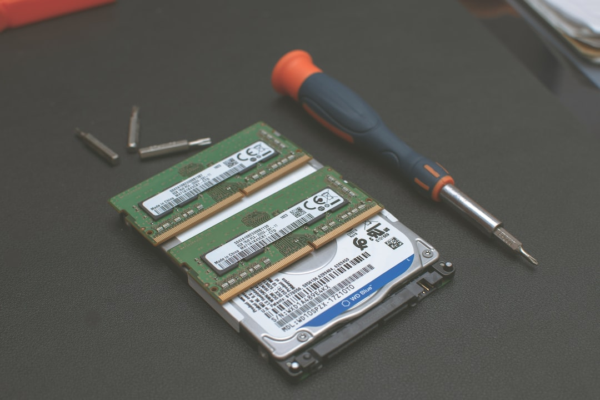
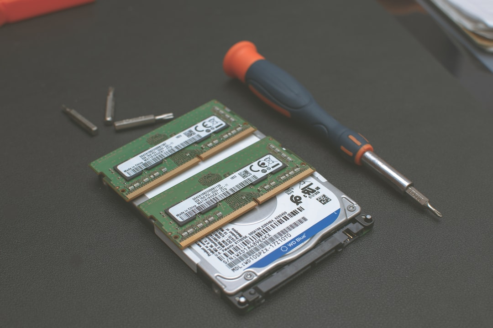
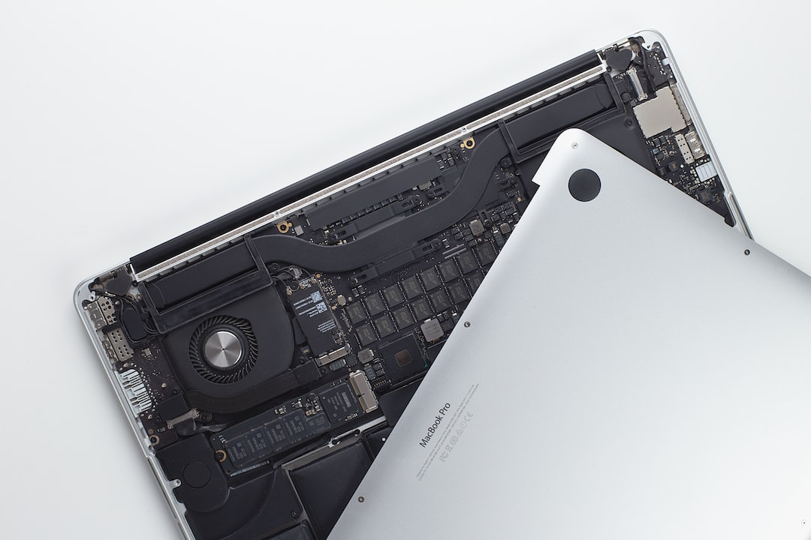
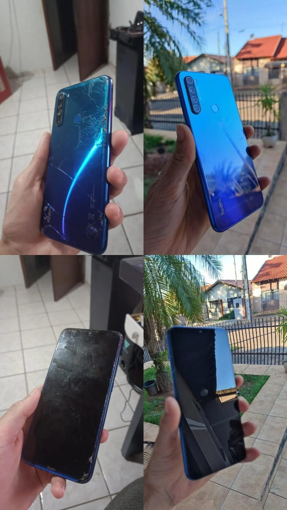
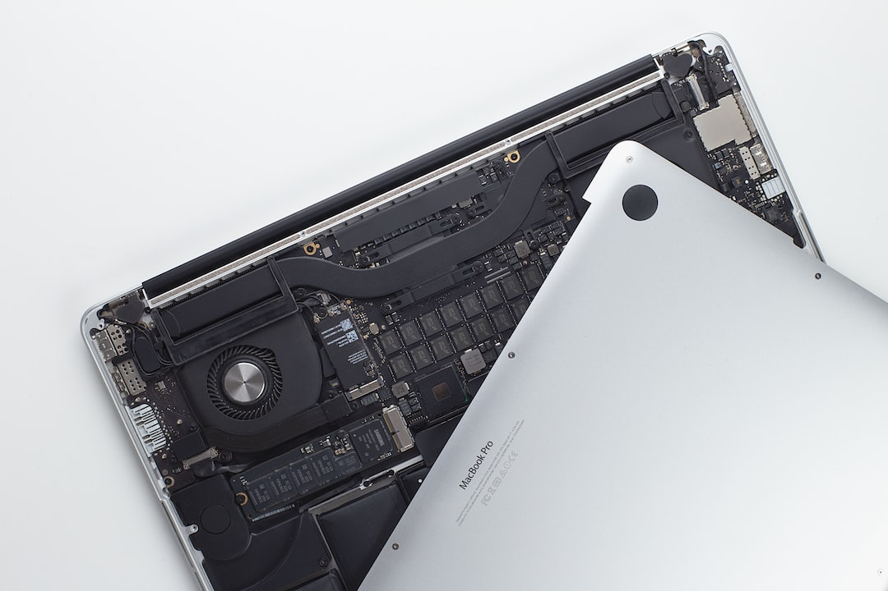
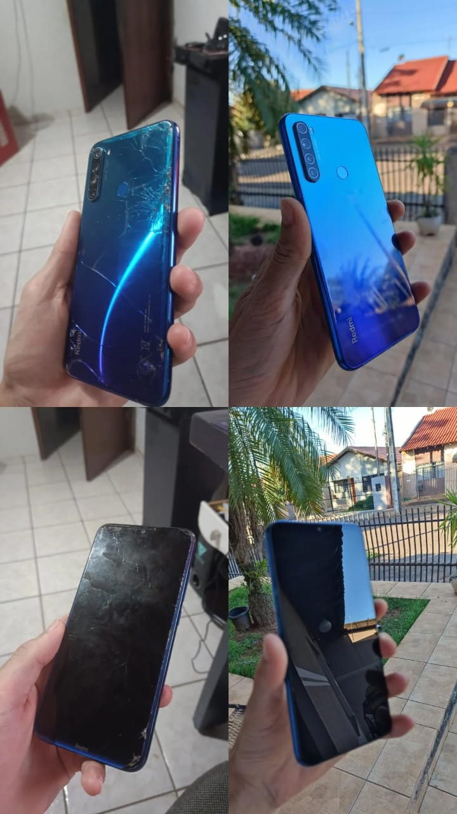

 




Concerto de Celulares
Nossos técnicos especializados fornecem serviços de reparo de celulares rápidos e confiáveis, corrigindo vários problemas, como substituição de tela, substituição de bateria, reparo de danos causados pela água e muito mais. Confie em nós para restaurar seu dispositivo para sua funcionalidade ideal.
serviços